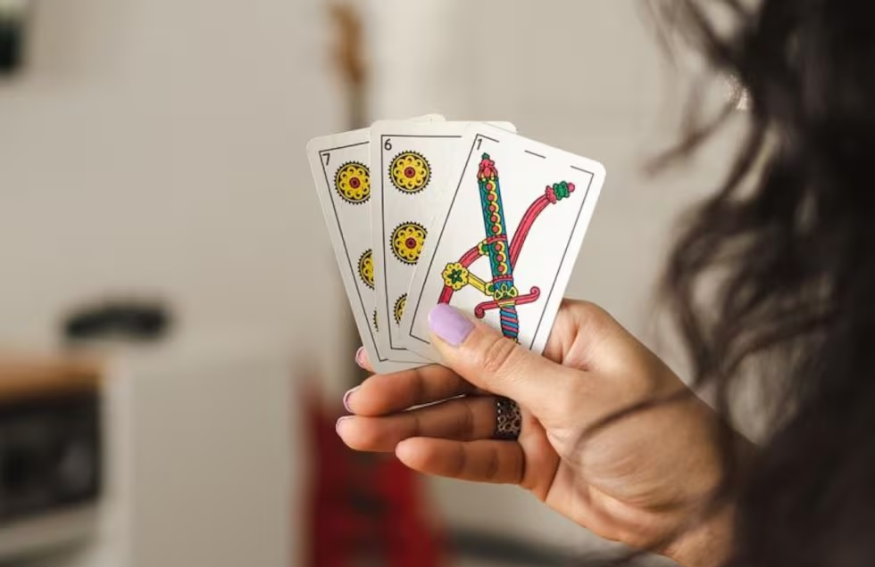
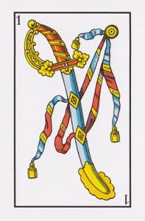
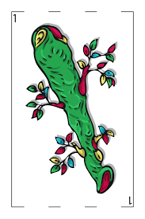
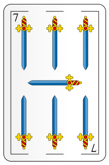

Truco Gaucho
Aprendé a jugar paso a paso
El truco es un juego de cartas tradicional muy popular en Argentina. Se juega con baraja española y combina estrategia, engaño y picardía.

Valores de las Cartas
El orden es muy particular. Las cartas más poderosas son:
1 de Espadas

1 de Bastos

7 de Espadas

7 de Oro

Luego siguen el 3, el 2, el 1 de copas/oros/espadas/bastos, etc.
¿Qué es el Envido?
El envido es una apuesta donde se comparan puntos de dos cartas del mismo palo. El que más tiene, gana.
¿Qué es el Truco?
El truco es el corazón del juego. Se canta para desafiar al oponente a ganar la mano con cartas más fuertes.
¿Y la Flor?
La Flor es como el Envido, pero con tres cartas del mismo palo. Es rara y vale mucho.